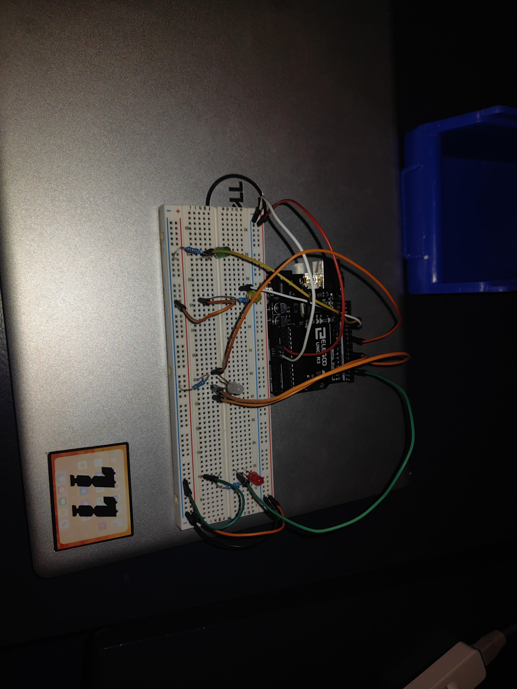

Contenido página WEB
Semana #1: Primeros pasos
Arduino es una plataforma de hardware y software libre, flexible y fácil de utilizar. Permite crear microordenadores de una sola placa para diferentes usos.
Semana #2: Armando la estructura
Aquí aprenderás a usar las etiquetas básicas de HTML para organizar títulos y párrafos, estableciendo la base de cualquier sitio web profesional.
Semana #3:Primer circuito
En esta clase exploramos cómo dar vida a nuestro primer circuito con arduino UNO con estructuras avanzadas en físico.

Semana #4: Efectos y personalización
En este espacio fortalecimos la creación de circuitos y la programación con un codigo en el que las luces led esperan para encenderse creando un bucle..
Semana #5: Programación de semaforo
En este espacio aprendimos la programación necesario para crear y programar un circuito que hiciera alusión a los semaforos utilizando las luces led.
Semana #6:Sensor Ultrazonico
En este apartado aprendimos el uso y programación de sensores utilizando el sitio web de Tinkerkard para programar y ensamblar el circuito